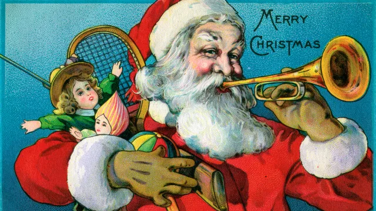

圣诞节在12月25日庆祝，既是一个神圣的宗教节日，也是一个世界性的文化和商业现象。两千年来，世界各地的人们一直以宗教和世俗性质的传统和习俗来观察它。圣诞节的习俗包括交换礼物、装饰圣诞树、参加教堂、与家人和朋友分享食物，当然还有等待圣诞老人到来。自1870年以来，圣诞节就一直是美国的联邦假日。
隆冬一直是世界各地庆祝的节日。在被称为耶稣的人到来之前几个世纪，早期欧洲人在冬天最黑暗的日子庆祝光明和出生。许多人在冬至期间欢欣鼓舞，那时最糟糕的冬天已经过去了，他们可以期待更长的白天和更长的阳光。
在斯堪的纳维亚，从12月21日冬至到1月，挪威人庆祝圣诞节。为了纪念太阳的回归，父子俩会把大圆木带回家，然后点燃。人们会大饱口福，直到原木烧毁，这可能需要12天。挪威人相信，每一次火灾的火花都代表着来年将出生的新猪或小牛。
12月底是欧洲大部分地区庆祝活动的最佳时机。每年的那个时候，大多数牛都被宰杀了，这样冬天就不用喂它们了。对许多人来说，这是一年中唯一有新鲜肉供应的时候。此外，这一年中生产的大多数葡萄酒和啤酒最终都经过发酵，可以饮用了。
在德国，人们在冬季向异教神奥登致敬。德国人对奥登感到恐惧，因为他们相信他会夜空飞行，观察他的人民，然后决定谁会兴亡。由于他的存在，许多人选择呆在家里面。
在罗马，冬天不像遥远的北方那样严酷，农神节--一个人们庆祝农神的节日。从冬至前一周开始，持续了整整一个月，农历节是一个享受的日子，在那时食物和饮料都很丰富，在一个月的时间里，被奴役的人得到了暂时的自由和平等的待遇。商业和学校都关闭了，以便每个人都能参加节日的庆祝活动。
同样在冬至前后，罗马人举行了一场纪念罗马儿童的盛宴"尤文纳利亚"。此外，上流社会的成员经常在12月25日庆祝不可征服的太阳之神密特拉的生日。人们认为，婴儿神密特拉是由岩石诞生的。对于一些罗马人来说，密特拉的生日是一年中最神圣的一天。
在基督教早期，复活节是主要节日；耶稣的生日并没有被庆祝。在四世纪，教会官员决定将耶稣的生日定为节日。不幸的是，圣经没有提到他的出生日期（清教徒后来指出这一事实，以否认庆祝活动的合法性）。虽然有证据表明他的出生可能在春天（为什么牧羊人会在隆冬放牧？），但教皇朱利叶斯一世选择了12月25日。人们普遍认为，教会选择这个日期是为了采纳和吸收异教农神节的传统。这一习俗最早被称为诞生节，到432年传到埃及，到六世纪末传到英国。
通过将圣诞节与传统的冬至节同时举行，教会领导人增加了圣诞节被大众接受的机会，但放弃了决定如何庆祝的权力。到中世纪，基督教在很大程度上取代了异教。在圣诞节，信徒们进入教堂，然后在类似于今天的狂欢节的醉酒狂欢气氛中大声庆祝。每年，一个乞丐或学生都会被冠以“暴政之王”的头衔，热心的庆祝者扮演着他的臣民。穷人会去富人家，要求他们最好的食物和饮料。如果业主不遵守，他们的访客很可能会恶作剧恐吓他们。圣诞节成为了一年中上层阶级可以通过招待不幸的公民来偿还他们对社会的真实或想象中的“债务”的日子。
17世纪初，一波宗教改革改变了欧洲庆祝圣诞节的方式。1645年，当奥利弗·克伦威尔和他的清教徒军队接管英格兰时，他们发誓要让英格兰摆脱颓废，作为他们努力的一部分，他们取消了圣诞节。根据大众的要求，查理二世被恢复了王位，并与他一起迎来了大众节日的回归。
1620年部分从英国离开的朝圣者来到美国，他们的清教徒信仰甚至比克伦威尔更为正统。因此，圣诞节在美国早期并不是一个节日。从1659年到1681年，圣诞节庆祝活动在波士顿实际上是非法的。任何表现出圣诞精神的人都会被罚款五先令。相比之下，在詹姆斯敦定居点，船长约翰·史密斯报告说，圣诞节是所有人都喜欢的，而且没有发生任何事件。
美国独立战争后，英国的习俗被抛弃，包括圣诞节。事实上，圣诞节直到1870年6月26日才被宣布为联邦假日。
直到19世纪，美国人才开始拥抱圣诞节。美国人重新发明了圣诞节，并将它从喧闹的狂欢节变成了以家庭为中心的和平与怀旧日。是什么激发了美国人对这个节日的兴趣呢？
19世纪初是一个阶级冲突和动荡的时期。在这段时间里，失业率居高不下，在圣诞节期间经常发生被驱除幻想的阶层的帮派骚乱。1828年，纽约市议会成立了该市第一支警察部队，以应对圣诞节暴乱。这促使某些上层阶级开始改变美国庆祝圣诞节的方式。
1819年，畅销书作家华盛顿·欧文（Washington Irving）写了《杰弗里·克雷恩（Geoffrey Crayon）的素描本》（The Sketchbook of gent.），这是一系列关于英国庄园庆祝圣诞节的故事。这些素描描绘了一位乡绅邀请农民到他的家里度假。与美国社会面临的问题相反，这两个群体毫不费力地融合在一起。在欧文看来，圣诞节应该是一个和平、热情的节日，让不同财富或社会地位的群体聚在一起。欧文虚构的庆祝者们享受着“古老的习俗”，包括为一位邪恶之王加冕。然而，欧文的书并不是基于他参加过的任何节日庆祝活动。事实上，许多历史学家表示，欧文在书中的叙述实际上是“发明”了传统，暗示它描述了这个季节的真实习俗。
也是在这个时候，英国作家查尔斯·狄更斯创作了经典的节日故事《圣诞颂歌》。故事中关于慈善和善意对全人类的重要性的信息在美国和英国引起了强烈的共鸣，并向维多利亚社会的成员展示了庆祝节日的好处。
19世纪初，家庭管教也变得不那么严厉，孩子对情感需求也更加敏感。圣诞节为家庭提供了一个让他们可以在不显得“宠坏”孩子的情况下，对孩子给予大量的关注和礼物的机会。
随着美国人开始将圣诞节视为一个完美的家庭节日，古老的习俗被逐渐发掘出来。人们把目光投向了最近的移民、天主教和圣公会教堂，参考他们该如何庆祝这一天。在接下来的100年里，美国人建立了自己的圣诞节传统，其中包括许多其他习俗，包括装饰树木、发送节日贺卡和赠送礼物。
尽管大多数家庭很快就接受了这样的事实：即他们庆祝的圣诞节已经有几个世纪的历史，但美国人确实重新发明了一个节日以满足一个不断增长的国家的文化需求。
相关内容
